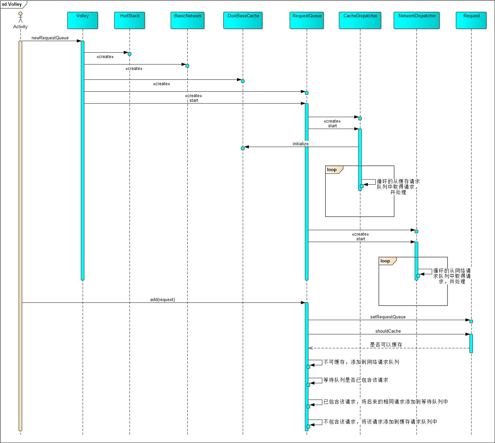

Volley源码解析
文章目录
最近复习校招的时候，发现很多公司的面试题都有考Volley，今天我们就来学习学习这个当年在2013年 Google I/O 大会上发布的Android平台网络通信库。
Volley
Volley是在2013年 Google I/O 大会上发布的一款Android平台网络通信库，具有网络请求的处理、小图片的异步加载和缓存网络请求等功能，能够帮助开发者更方便地执行网络操作，而且更快速高效。
Volley适合高并发、小请求的场景，不适合用来下载大文件，因为Volley会保持在解析过程中所有的响应。Volley的使用比较简单，这里就不详细阐述，具体教程参见Android官方教程。
结构
Volley类图：

Volley的框架结构相对来说比较简单，主要由以下几个部分组成：
-
RequestQueue：Volley的主要类，负责请求分发，内部包含两个请求队列，分别是缓存请求队列和网络请求队列。RequestQueue作为生产者-消费者模式中的生产者。 -
NetWorkDispatcher：网络请求类，继承自Thread。NetWorkDispatcher自启动就一直在后台不断的获取RequestQueue的网络请求队列中的请求并处理。RequestQueue作为生产者-消费者模式中的消费者。 -
CacheDispatcher：缓存请求类，继承自Thread。这个类和NetWorkDispatcher在原理上是一致的，但是CacheDispatcher是获取RequestQueue的缓存请求队列中的请求，并且在处理时先从本地查找缓存，如果未命中则将请求添加到网络请求队列中，由NetWorkDispatcher处理。 -
Request：请求类，该类是抽象的泛型类，Volley提供了几个主要的实现，该类主要包含了对Http请求相关的操作，包括请求参数、编码等等。同时该类也提供了回调函数进行响应解析。 -
ExecutorDelivery：响应分发类，实现了ResponseDelivery接口，是该接口在Volley中的唯一实现。ExecutorDelivery使用主线程的Handler将响应分发到主线程中，并调用Request的响应回调函数。 -
Cache：提供了缓存的接口，在一般适用的是Volley提供的DiskBaseCache来进行本地缓存，当然我们也可以通过实现Cache接口自定义缓存方式。 -
NetWork：提供网络请求的具体方式，NetWorkDispatcher在获取到请求后，会将请求分发到NetWork的实现类中。 -
HttpStack：Http协议栈，在Volley中提供了两个实现类，其中HurlStack适用于Android 2.3及以上，HttpClientStack适用于Android 2.3以下。这样做的原因是 Android 2.3以下HttpUrlConnection是不能用的，而Android 2.3以上就是采用HttpUrlConnection进行连接的，以下就是直接用的HttpClient。
请求分发
在看过Volley的基本结构后，我们通过源码来进一步认识Volley。
顺序图（图片有点大，可以点开放大看）：

从图中可以看出RequestQueue将请求进行分类，由不同的线程去执行。下面我们就从代码对这个过程进行分析。
public <T> Request<T> add(Request<T> request) {
...
//判断请求是否可以缓存，如果不可以缓存，则直接加入网络请求队列，由NetWorkDispatcher处理。
if (!request.shouldCache()) {
mNetworkQueue.add(request);
return request;
}
//这里判断是否有相同的请求，并利用缓存来减少请求数量
synchronized (mWaitingRequests) {
//getCacheKey默认返回：请求方式+请求URL
String cacheKey = request.getCacheKey();
//如果等待队列中已存在相同的请求，将后续的相同请求加入一个队列中
if (mWaitingRequests.containsKey(cacheKey)) {
Queue<Request<?>> stagedRequests = mWaitingRequests.get(cacheKey);
if (stagedRequests == null) {
stagedRequests = new LinkedList<Request<?>>();
}
stagedRequests.add(request);
mWaitingRequests.put(cacheKey, stagedRequests);
...
} else {
//没有相同请求，向等待队列中放入标记位，并添加到缓存请求队列中
mWaitingRequests.put(cacheKey, null);
mCacheQueue.add(request);
}
return request;
}
}
Volley在设计中采用了生产者-消费者模式，在上面的代码中mNetworkQueue和mCacheQueue是阻塞队列，NetWorkDispatcher和CacheDispatcher是工作者线程。
NetWorkDispatcher在Volley中默认是4个线程。
对Volley的请求过程Android官方也有一张示意图：